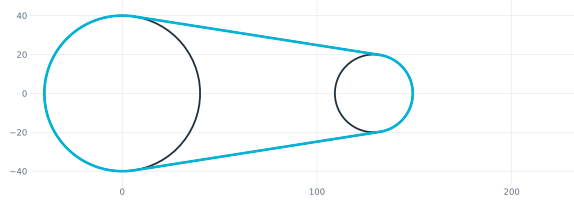
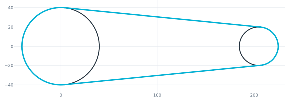
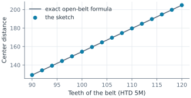
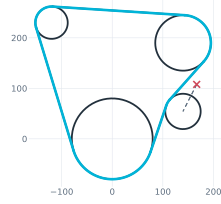
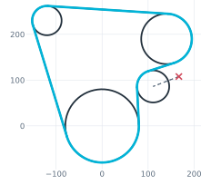
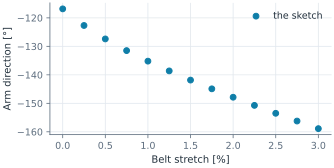

Belt drives solved from their belt
A belt comes in catalog lengths, and the drive must fit it. In a constraint sketch, the belt is drawn as what it is: straight spans tangent to the pulleys and arcs wrapped around them. One expression adds up its length and sets it equal to the catalog length. The solver then places whatever is free: the second pulley of a timing belt drive, or the tensioner arm of a car engine’s serpentine drive, which takes up the belt as it stretches.

[1]:
import math
import matplotlib.pyplot as plt
import planex as px
from scipy.optimize import brentq
The belt as geometry
Each pulley is a circle with the belt’s wrap: counterclockwise (+1) where the belt runs on its face, and clockwise (-1) where its back runs over an idler. A span leaves a pulley that the belt wraps counterclockwise with the pulley’s center on its left, and one that it wraps clockwise with the center on its right. span_points draws the span from that textbook rule, which also gives the crossed spans to and from an idler. add_belt draws the spans in their route, wraps an arc around
each pulley between the spans that meet there, makes every span tangent to the arcs at its two ends, and returns the belt’s length as an expression made of the spans’ lengths and r·sweep of every arc.
[3]:
def span_points(pulleys, a, b):
(ax, ay), ra, wa = pulleys[a]
(bx, by), rb, wb = pulleys[b]
tilt = math.asin((wb * rb - wa * ra) / math.dist((ax, ay), (bx, by)))
angle = math.atan2(by - ay, bx - ax) - tilt
nx, ny = -math.sin(angle), math.cos(angle)
return (ax - wa * ra * nx, ay - wa * ra * ny), (bx - wb * rb * nx, by - wb * rb * ny)
def add_belt(sk, pulleys, route):
spans, wraps = [], []
for a, b in zip(route, route[1:] + route[:1]):
(x0, y0), (x1, y1) = span_points(pulleys, a, b)
sk.Move((x0, y0)).Line(x1 - x0, y1 - y0, id=f"{a} to {b}")
spans.append(f"{a} to {b}")
sk.auto_constraint = True
for i, p in enumerate(route):
ends = [spans[i - 1] + ".end", spans[i] + ".start"]
if pulleys[p][2] < 0:
ends.reverse()
sk.Arc(ends[0], ends[1], congruent=p, id="on " + p)
wraps.append("on " + p)
sk.auto_constraint = False
for i, span in enumerate(spans):
sk.Constrain(span, wraps[i], px.Tangent)
sk.Constrain(span, wraps[(i + 1) % len(wraps)], px.Tangent)
arcs = " + ".join(f"{w}.r*abs({w}.sweep)" for w in wraps)
return spans, wraps, " + ".join(s + ".length" for s in spans) + f" + pi/180*({arcs})"
A timing belt drive
The example is a timing belt drive with a driver of diameter 80 and a driven pulley of 40 on an HTD 5M timing belt, with 5 mm per tooth. The driven pulley slides on the horizontal axis. A construction line of length belt carries the catalog length, and the rule ... = belt places the pulley.
[4]:
R = 40.0
r = 20.0
drive = px.Sketch(id="timing drive")
pulleys = {"driver": ((0, 0), R, 1), "driven": ((150, 0), r, 1)}
for name, ((x, y), radius, _) in pulleys.items():
drive.Circle(x, y, radius, id=name)
drive.Constrain(name, px.Radius, radius, id="r " + name)
drive.Constrain("driver.center", drive.origin, px.Coincident)
drive.Constrain("driven.center", px.H, px.Coincident)
spans, wraps, length = add_belt(drive, pulleys, ["driver", "driven"])
drive.Move((0, -70), px.Fix).Line(200, 0, px.Horizontal, id="gauge", construction=True)
drive.Constrain("gauge", px.Distance, 500, id="belt")
drive.Expression(length + " = belt", id="belt length")
print(drive.status, drive.dof)
full 0
A table of belts is a loop of Updates (Figure 1). Check: every center distance agrees with the exact length of an open belt, L = 2 √(C² − (R − r)²) + R (π + 2φ) + r (π − 2φ) with sin φ = (R − r) / C, solved for C (Figure 2):
[5]:
def open_belt(C):
phi = math.asin((R - r) / C)
return 2 * math.sqrt(C**2 - (R - r) ** 2) + R * (math.pi + 2 * phi) + r * (math.pi - 2 * phi)
teeth = list(range(90, 122, 2))
centers = []
for n in teeth:
centers.append(drive.Update({"belt": 5.0 * n}).Location("driven.center")[0])
exact = [brentq(lambda c: open_belt(c) - 5.0 * n, R - r + 1e-9, 1e4) for n in teeth]
print(len(teeth), "belts, largest difference to the formula", max(abs(c - e) for c, e in zip(centers, exact)))
print({n: round(c, 3) for n, c in list(zip(teeth, centers))[::3]})
16 belts, largest difference to the formula 5.684341886080802e-14
{90: 129.201, 96: 144.365, 102: 159.497, 108: 174.606, 114: 189.697, 120: 204.775}

(a) 90 teeth

(b) 120 teeth

A serpentine drive with an automatic tensioner
The example is a car engine’s accessory drive, in which the crankshaft pulley of diameter 160 drives the water pump and the alternator over one ribbed belt. A spring-loaded tensioner presses an idler of diameter 70 into the span between crankshaft and pump, on the belt’s back. The idler sits on an arm of 60 that turns about a fixed pivot. Nothing about the arm’s angle is given, because the belt’s length decides it. The arm is drawn only roughly. A new belt of 1115 sets its angle, and as the belt stretches, the arm swings to take up the slack, and the sketch shows how far.
[7]:
pivot = (166.9, 107.8)
idler = (pivot[0] + 60 * math.cos(math.radians(239.7)), pivot[1] + 60 * math.sin(math.radians(239.7)))
pulleys = {"crank": ((0, 0), 80, 1), "idler": (idler, 35, -1),
"pump": ((140, 190), 55, 1), "alternator": ((-120, 230), 32, 1)}
engine = px.Sketch(id="accessory drive")
for name, ((x, y), radius, _) in pulleys.items():
engine.Circle(x, y, radius, id=name)
engine.Constrain(name, px.Radius, radius, id="r " + name)
if name != "idler":
engine.Constrain(name + ".center", px.Fix)
engine.Move(pivot, px.Fix).Line(idler[0] - pivot[0], idler[1] - pivot[1], id="arm", construction=True)
engine.Constrain("arm.end", "idler.center", px.Coincident)
engine.Constrain("arm", px.Distance, 60, id="arm length")
spans, wraps, length = add_belt(engine, pulleys, ["crank", "idler", "pump", "alternator"])
engine.Move((-200, -120), px.Fix).Line(300, 0, px.Horizontal, id="gauge", construction=True)
engine.Constrain("gauge", px.Distance, 1115, id="belt")
engine.Expression(length + " = belt", id="belt length")
print(engine.status, engine.dof, "condition", round(engine.condition))
print({w: round(engine.Geometry(w)["sweep"], 2) for w in wraps})
full 0 condition 592
{'on crank': 144.39, 'on idler': 22.9, 'on pump': 127.88, 'on alternator': 110.62}
A belt stretches by up to about 1 % over its life. The tensioner’s travel must cover that, and more for a belt of the next catalog size. The sweep below stretches the belt by up to 3 % and reads the arm’s direction each time (Figures 3 and 4):
[8]:
new = engine.Copy()
stretches = [k / 4 for k in range(13)]
angles = []
for s in stretches:
angles.append(engine.Update({"belt": 1115 * (1 + s / 100)}).Geometry("arm")["angle"])
print("the arm swings", round(angles[0] - angles[4], 2), "degrees for 1 % and", round(angles[0] - angles[-1], 2),
"degrees for 3 %")
the arm swings 18.35 degrees for 1 % and 42.05 degrees for 3 %
Checks on the stretched belt, none of which is part of the rule:
the belt’s length, added up from the solved spans and arcs, is the catalog length plus 3 %;
every span touches both of its pulleys, with the distance from each center to the span’s line equal to the radius;
the wraps of a closed belt, counterclockwise minus clockwise, add up to one turn.
[9]:
def belt_length(sk):
return (sum(sk.Geometry(s)["length"] for s in spans)
+ sum(math.pi / 180 * sk.Geometry(w)["r"] * abs(sk.Geometry(w)["sweep"]) for w in wraps))
def off_tangent(sk, span, pulley):
g, c = sk.Geometry(span), sk.Geometry(pulley)["center"]
(x0, y0), (x1, y1) = g["start"], g["end"]
d = abs((x1 - x0) * (c[1] - y0) - (y1 - y0) * (c[0] - x0)) / g["length"]
return abs(d - sk.Geometry(pulley)["r"])
print("belt", belt_length(engine), "catalog + 3 %", 1115 * 1.03)
worst = max(off_tangent(engine, s, p) for s in spans for p in s.split(" to "))
print("largest distance of a span from its tangent", worst)
turns = sum(pulleys[w[3:]][2] * abs(engine.Geometry(w)["sweep"]) for w in wraps)
print("wraps add up to", turns, "degrees")
belt 1148.45 catalog + 3 % 1148.45
largest distance of a span from its tangent 1.4210854715202004e-14
wraps add up to 360.0 degrees

(a) A new belt of 1115: arm at -116.8°

(b) 3 % longer: arm at -158.9°
